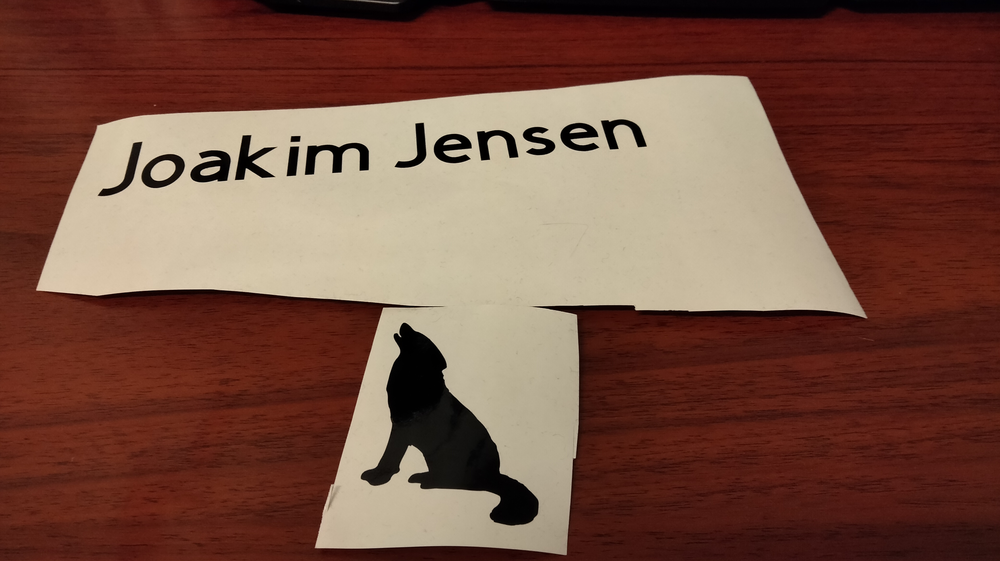

Cutting custom designed stickers
Vinyl cutting
In this assignment I'm going to explain how I've created my own customized logo sticker with cricut maker and how I might also use this for my final project of digifab.
Designing the sticker
Designing the sticker I took in use the Cricut Design Space, an application made particular for designing your own cuts for the Cricut Maker. This application is also used when you are connecting to the Cricut Maker and doing the actual cut. More on this later. The application also holds alot of predesigned cuts to choose, although some of them do cost money to use.
When designing a new cut in the Cricut Design Space click the new project button. This will take you to the canvas. On the left side there is a toolbox giving you a some options to stuff like, putting in text, images, other cuts, images and shapes. For my project I was gonna make a logo with my name and some animal that can stand beside it. First, I used the text tool to write my name. Here after you get the option to resize the text to the size wished for. Here after I went to google to find some image of an animal which I would like to have by the side of my name. I played around with a couple of animals, but ended up going for using a howling wolf. I then adjusted the size of the text and my name to have around the same height, while still maintaining the scales. The cut is now ready for cutting.
I also wanted to point out, that you don't actually need to use Cricut Design Maker to design cuts, you really only need it to do the actual cutting. For more advanced design it might be easier to use a program like IncScape, which has a lot more options for creating more advanced design. When doing so simply just export the project to .svg file. It can then be easily uploaded in the Cricut Design Space. You can then do the last small modifications in With .svg you don't have to care about getting scales correct.
Cutting the sticker
Cutting the sticker is a simple process. First, connect the Cricut Maker to your computer with USB and turn the Cricut Maker on. Having prepared the cut in Cricut Design Space in the canvas, you will see a button in the right corner "make it". Clicking this button will take you to a mat preperation page. Here you need to choose if you will be using a mat to cut on. Here I choose with mat. Then the program will prompt you to place your cut on the mat. For my case, it also suggested I cut the two components of my project as individual cuts. So the wolf and name would be cut separably.
Having placed the wolf and name accordingly onto the mat, press continue. You will then be prompted to select cutting material, along with the fact that you will actually be cutting. It is possible for the Cricut Maker to also draw on paper. Next up is placing the sticker paper onto the mat. The mat is sticky so the sticker paper will stick on the mat. Then, in Cricut Design Space you can now start the cut. The Maker will have button that will start blinking. Place the mat with the sticker paper inside of the Maker, but don't press it in. Then click the blinking button and the Maker will draw in the paper. The cut is now started. Do not interfere with the machine while it's cutting to avoid hurting the cut or yourself. The maker cuts with a very sharp knife.
Post preping the cut
When finished, the Maker will spit out the mat the same way it came in. You can now peel of the sticker paper from the mat. You will notice that the Maker does not actually remove "extra" sticker paper but rather it will have just cut it to the form you predescribed. All extra sticker paper will have to be cut or removed manually. That also goes for holes in your cut. Take for example the letter "a" which exist in my name. It has a hole in the middle. This will be filled with excessive sticker paper and will have to be removed manually. The sticker is now ready for use.
How I might use vinyl cutting for the final project
Vinyl cutting is a very simple digifab tool. It can't really be used for enhancing or creating components for a project. However, it is a very usefull tool for customizing a project. In this project, I have showed we can create a cool logo, which also has a figure. This means I could cut out some pattern to stick to the project to make it look more stylish. I could also cut out different small kinds of codes, if I wanted to label certain components.
